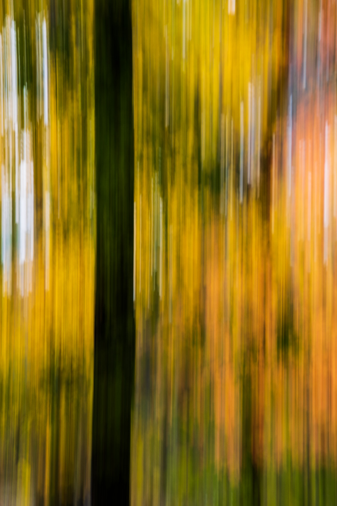
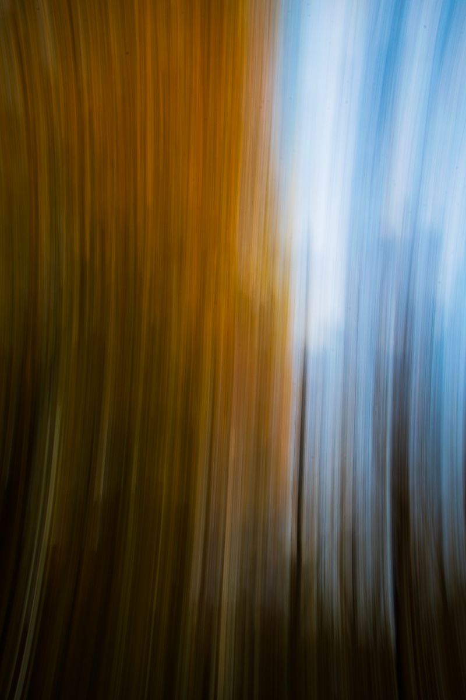

T
rees are notoriously hard to photograph. They're ubiquitous in our world, often going unnoticed as we hurry about, and as such a successful photograph of a tree requires enough character and perspective to warrent more attention than we give the trees all around us.
I've made a lot of photos of trees.



By panning with a tree's major lines—here, its trunk and the edge of its canopy—I can make abstract a photograph without losing the basic form and, more crucially, the identity, of my subject.


Coming up from the beach one cold winter evening, I crested a hill and was clobbered by the fiery light of the sky. By panning across the line of bare trees, I captured the intense color of the sunset while hinting at the looming woods ahead.